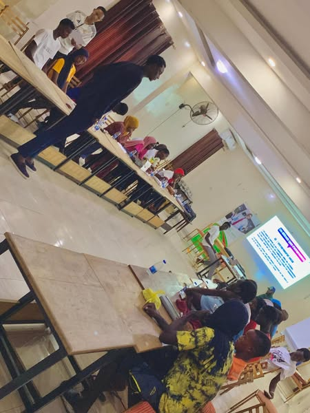
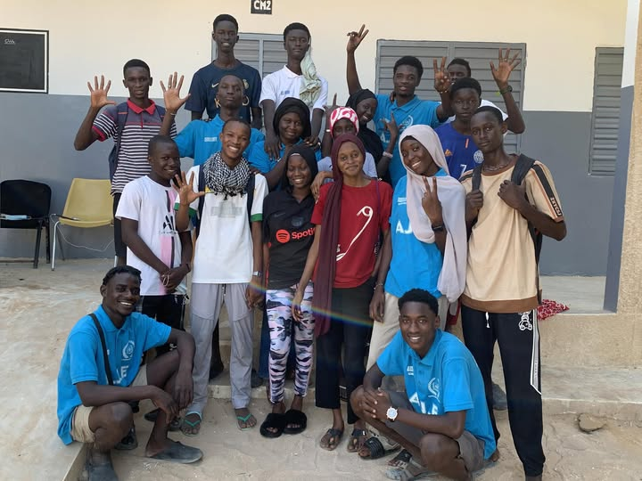
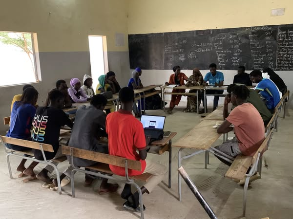
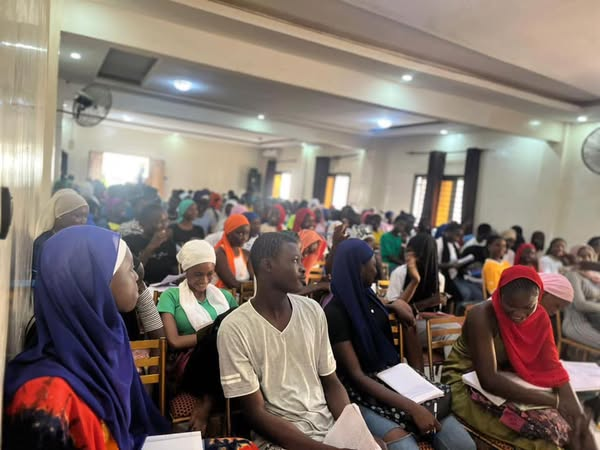

La reussite de l'association est notre priorité la plus importante. Nous nous engageons à aider les jeunes à atteindre leurs objectifs et à les faire croire en soi. Nous sommes une association de jeunes, pour les jeunes, qui œuvre pour la jeunesse.
Les Volets d’Action de l’Amicale
L’Amicale des Jeunes Élèves et Étudiants s’appuie sur quatre grands volets d’action pour accompagner les jeunes dans leur développement personnel, scolaire et citoyen.

Le volet éducatif est au cœur de nos priorités. À travers des séances de synthèse, du soutien scolaire et des activités pédagogiques, nous aidons les élèves à renforcer leurs connaissances et à se préparer efficacement aux examens.

volet environnement vise à sensibiliser les jeunes à la protection de la nature et au respect de leur cadre de vie. Nous organisons des campagnes de nettoyage, des opérations de reboisement, et des activités de sensibilisation sur les enjeux écologiques.

Le volet social est mis en œuvre pour aider les jeunes à se sentir inclus et à se sentir soutenus. Nous organisons des activités de solidarité, des visites dans les centres sociaux, des campagnes de solidarité, et des projets de développement personnel.

Le volet sensibilisation a pour but d’éveiller les consciences sur des thématiques essentielles comme la citoyenneté, la santé, la discipline, la paix et la lutte contre les violences scolaires. À travers des débats, conférences et campagnes de terrain, nous formons des jeunes responsables et engagés.
Enfin, le volet social nous permet de poser des actions solidaires concrètes : soutien aux élèves démunis, dons aux familles en difficulté, visites dans les centres sociaux, etc. Nous croyons que la solidarité est une valeur fondamentale pour bâtir une jeunesse unie et forte.
À travers ces quatre volets, l’Amicale œuvre chaque jour pour le progrès, l’éveil et la réussite de la jeunesse.